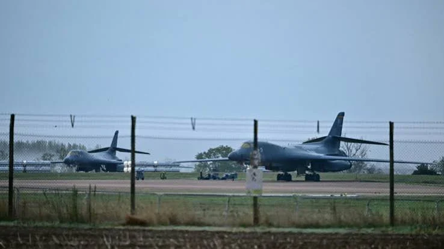

Le 4 octobre 2026, le Pentagone a confirmé que tous les bombardiers américains déployés à RAF Fairford, dans le Gloucestershire, avaient regagné leurs bases aux États-Unis. Une douzaine de B-1 quittent ainsi la principale base britannique des bombardiers lourds américains, une semaine après l'arrestation d'hommes soupçonnés d'avoir préparé un attentat et alors que Londres évoque de « fortes indications » d'une implication de l'Iran, que Téhéran dément.
Le Pentagone ne commente pas en temps réel les mouvements de ses forces. Dimanche 4 octobre, un porte-parole a pourtant reconnu que « tous les bombardiers américains déployés à RAF Fairford ont été redéployés vers leurs bases d'origine aux États-Unis ». Le départ, d'une douzaine de B-1 selon la presse, a eu lieu en fin de semaine, et le New York Times a parlé d'un mouvement exécuté dans la précipitation, à la suite de nouvelles menaces liées à un complot que des responsables disent soutenu par l'Iran.
La décision fait suite à un enchaînement de signaux. Dans la nuit du 26 au 27 septembre, trois fourgons suspects ont été signalés près de Whelford, village voisin de la base : cinq hommes avaient été arrêtés près de la base, la police trouvant de l'essence mais aucun engin explosif, et environ 85 foyers ont été évacués. Un sixième homme, britanno-iranien, a été arrêté à Londres début octobre. Les suspects ont depuis été remis en liberté, et l'enquête de la police antiterroriste se poursuit.
| Acteur | Position |
|---|---|
| Pentagone | Confirme le retour de tous les bombardiers, sans détailler les raisons |
| Andy Burnham | Premier ministre britannique, évoque de « fortes indications » d'une implication iranienne |
| Donald Trump | Salue les arrestations, dit que les suspects voulaient causer de gros dégâts |
| Iran | Dément toute implication et convoque l'ambassadeur britannique à Téhéran |
Le Pentagone confirme que tous les bombardiers ont quitté RAF Fairford.
Un sixième suspect, britanno-iranien, est arrêté à Londres ; Téhéran convoque l'ambassadeur britannique.
Trois fourgons suspects près de Whelford ; cinq hommes arrêtés, 85 foyers évacués.
Andy Burnham succède à Keir Starmer à Downing Street et maintient l'accord sur les bases.
Des B-52 puis des B-1 s'installent à Fairford.
Londres autorise les États-Unis à utiliser ses bases pour des opérations « défensives » limitées.
Début de la guerre en Iran.
RAF Fairford est, malgré son nom, d'abord une base américaine : c'est l'un des rares aérodromes d'Europe équipés pour accueillir les bombardiers lourds de l'US Air Force, et, selon The Week, le seul du Royaume-Uni autorisé à le faire. Washington l'utilisait depuis mars pour des frappes contre des sites iraniens, que Londres qualifie de défensives, car le Royaume-Uni refuse de se joindre à des opérations offensives.
Le départ complique la logistique américaine. Selon The Week, les sorties de B-1 et de B-52 devront partir de bases du continent américain, comme Ellsworth dans le Dakota du Sud, avec des vols transatlantiques plus longs et davantage de ravitaillements en vol. Washington envoie par ailleurs un troisième groupe aéronaval, autour du porte-avions Theodore Roosevelt, au Moyen-Orient.
« Nous avons reconnu que tous les bombardiers américains déployés à RAF Fairford ont été redéployés vers leurs bases d'origine. »
— Porte-parole du Pentagone, 4 octobre 2026 (traduction)Selon i24NEWS, Israël aurait averti l'Allemagne d'une hausse de la menace contre les installations américaines, dont les bases de Ramstein et de Spangdahlem, avec le risque d'attaques de drones. La guerre, elle, n'est pas terminée : les pourparlers de cessez-le-feu patinent, Donald Trump ayant rejeté la proposition iranienne de rouvrir le détroit d'Ormuz, et il affirme que l'action pourrait reprendre après les élections de mi-mandat de novembre.
En ouvrant ses bases aux bombardiers américains tout en refusant d'attaquer lui-même, le Royaume-Uni a cru tenir une ligne médiane. Le retrait de Fairford montre ses limites : l'allié se retire dès que le risque devient trop lourd, laissant à Londres la charge de la menace sans l'avantage stratégique. Il pose aussi la question de la dépendance militaire envers Washington : si la base la plus utile aux États-Unis ne peut plus être protégée, c'est l'équilibre de la « relation spéciale » qui est en jeu.
On 4 October 2026, the Pentagon confirmed that all US bombers deployed to RAF Fairford in Gloucestershire had returned to their bases in the United States. About a dozen B-1s are leaving the main British base for US heavy bombers, a week after the arrest of men suspected of plotting an attack, and as London speaks of “strong indications” of Iranian involvement, which Tehran denies.
The Pentagon does not comment on force movements in real time. On Sunday 4 October, however, a spokesperson acknowledged that “all US bombers that were deployed to RAF Fairford have re-deployed to their home stations in the United States”. The departure of about a dozen B-1s, according to the press, took place at the end of the week, and The New York Times described a movement carried out in haste following new threats linked to a plot officials say was backed by Iran.
The decision follows a chain of warning signs. Overnight on 26–27 September, three suspicious vans were reported near Whelford, a village next to the base: five men were arrested near the base, police finding petrol but no explosive device, and some 85 homes were evacuated. A sixth man, a British-Iranian dual national, was arrested in London in early October. The suspects have since been released, and the counter-terrorism police investigation continues.
| Actor | Position |
|---|---|
| Pentagon | Confirms the return of all bombers, without detailing the reasons |
| Andy Burnham | UK Prime Minister, speaks of “strong indications” of Iranian involvement |
| Donald Trump | Praises the arrests, says the suspects wanted to cause major damage |
| Iran | Denies any involvement and summons the British ambassador in Tehran |
The Pentagon confirms that all bombers have left RAF Fairford.
A sixth suspect, a British-Iranian dual national, is arrested in London; Tehran summons the British ambassador.
Three suspicious vans near Whelford; five men arrested, 85 homes evacuated.
Andy Burnham succeeds Keir Starmer at Downing Street and keeps the basing agreement.
B-52s, then B-1s, settle in at Fairford.
London allows the United States to use its bases for limited “defensive” operations.
The war with Iran begins.
Despite its name, RAF Fairford is first of all an American base: it is one of the few airfields in Europe equipped to host US Air Force heavy bombers and, according to The Week, the only one in the UK cleared to do so. Washington had used it since March for strikes on Iranian sites, which London describes as defensive, since the United Kingdom refuses to join offensive operations.
The departure complicates American logistics. According to The Week, B-1 and B-52 sorties will now have to fly from bases in the continental United States, such as Ellsworth in South Dakota, with longer transatlantic flights and more aerial refuelling. Washington is also sending a third carrier strike group, built around the carrier Theodore Roosevelt, to the Middle East.
“We can acknowledge now that all US bombers that were deployed to RAF Fairford have re-deployed to their home stations in the United States.”
— Pentagon spokesperson, 4 October 2026According to i24NEWS, Israel reportedly warned Germany of a higher threat against American installations, including the Ramstein and Spangdahlem air bases, with the risk of drone attacks. The war itself is not over: ceasefire talks are stalling, Donald Trump having rejected Iran's proposal to reopen the Strait of Hormuz, and he says action could resume after the November midterm elections.
By opening its bases to American bombers while refusing to attack itself, the United Kingdom believed it had found a middle line. The Fairford pull-out shows its limits: the ally withdraws as soon as the risk becomes too heavy, leaving London with the burden of the threat without the strategic benefit. It also raises the question of military dependence on Washington: if the base most useful to the United States can no longer be protected, the balance of the “special relationship” is at stake.